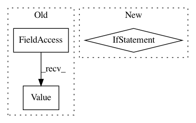

1b66cff1b4af1b32d72839af19282f526d04acf0,lib/streamlit/proxy/ClientWebSocket.py,ClientWebSocket,_handle_backend_msg,#ClientWebSocket#Any#Any#Any#,117
Before Change
if command == protobuf.BackMsg.Command.Value("HELP"):
LOGGER.debug("Received command to display help.")
os.system("python -m streamlit help &")
elif command == protobuf.BackMsg.Command.Value("CLOUD_UPLOAD"):
yield self._save_cloud(connection, ws)
else:
LOGGER.warning("no handler for "%s"",
After Change
os.system("python -m streamlit help &")
elif msg_type == "cloud_upload":
yield self._save_cloud(connection, ws)
elif msg_type == "rerun_script":
LOGGER.info("Rerunning the command "%s"." % \
backend_msg.rerun_script)
else:
In pattern: SUPERPATTERN
Frequency: 4
Non-data size: 3
Instances
Project Name: streamlit/streamlit
Commit Name: 1b66cff1b4af1b32d72839af19282f526d04acf0
Time: 2018-08-15
Author: adrien.g.treuille@gmail.com
File Name: lib/streamlit/proxy/ClientWebSocket.py
Class Name: ClientWebSocket
Method Name: _handle_backend_msg
Project Name: ruotianluo/self-critical.pytorch
Commit Name: 37a4b84ea1a89dae4d94f88afcc454ce5ac7b467
Time: 2018-05-12
Author: rluo@ttic.edu
File Name: train.py
Class Name:
Method Name: add_summary_value
Project Name: streamlit/streamlit
Commit Name: 80a927a861111c34599f8e0105942192ed37e6e7
Time: 2018-08-16
Author: adrien.g.treuille@gmail.com
File Name: lib/streamlit/proxy/ClientWebSocket.py
Class Name: ClientWebSocket
Method Name: _handle_backend_msg